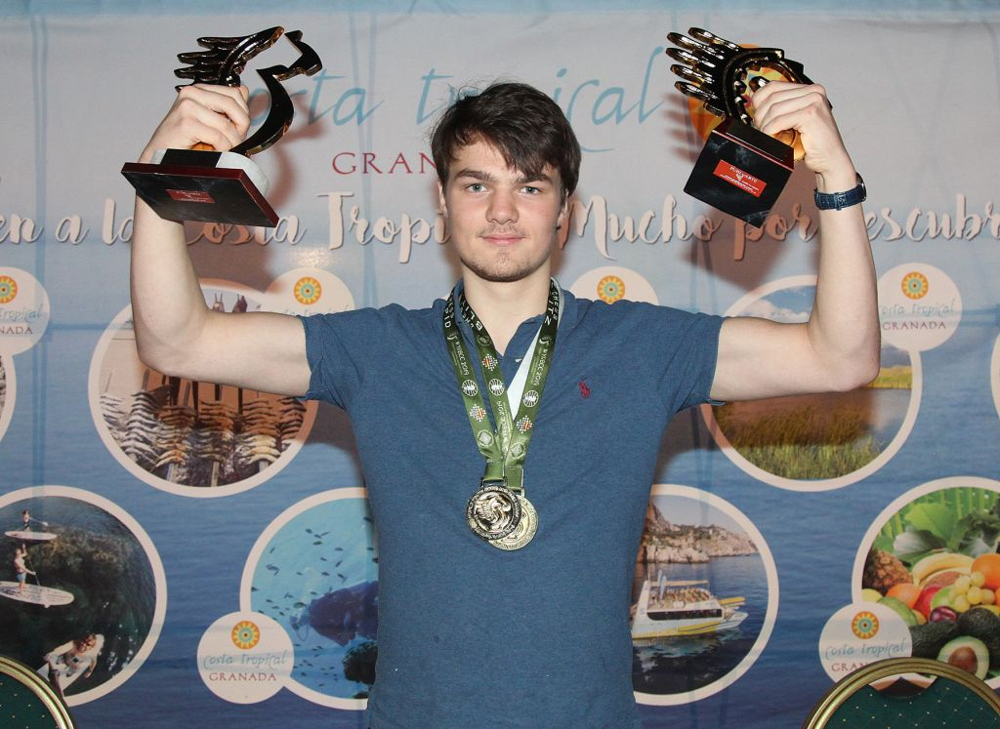

World Champion Rapid & Blitz!!

- My name is Lucas van Foreest. I was born in Hengelo 3 March 2001.
- I have 4 brothers: Jorden, Pieter,
Tristan, Nanne
and one sister Machteld.
- I come from a chess family. My grand grandfather and his brother were both three times Dutch champion. My brothers and sister all play chess.
- For chess training I used the app RealChess. For more information see realchess.
- I have been trained by Geon Knol, Sipke Ernst and
Sergey Tiviakov .
- Special Achievements:
- 2016: International Master
- 2017: Winner of the Tata Top Group qualifying for the Tata challengers
- 2017: Shared winner of the
Batavia tournament and second Grandmaster norm
- 2017: Shared winner Dutch Youth below 20
- 2018: Shared winner of the Open Dutch Championship
- 2018: International Grandmaster
- 2019: Dutch Champion
- 2019: World Champion Rapid and Blitz U18
- More information about my chess achievements can be found
on my Fide page .
|